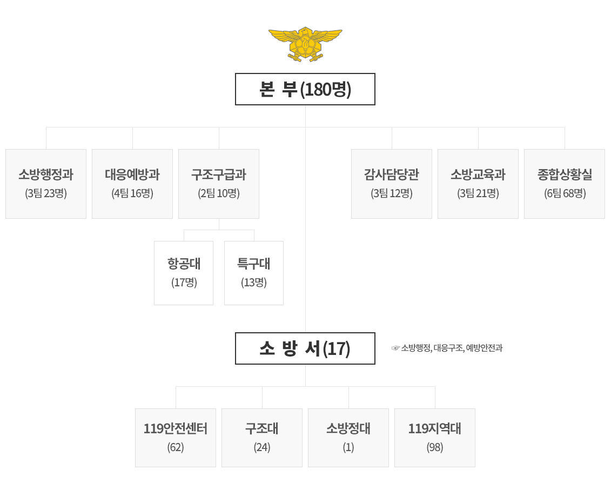

Home
>
본부소개
>
본부현황
sns
facebook
kakao
소방산업
조직 및 인력
예산 및 장비
소방대상물 등
소방활동
소방산업
42. 소방시설업 :
484개소
43. 구급차
(내용연수 경과)
무상지원 :
5대(2016년)
- 순천 청암대 2, 광양 보건대 2, 영암 동아보건대 1
기구
· 소방본부 :
4과 1관 1실(항공대, 특수구조대)
· 소방서 :
17개 소방서, 62개 안전센터, 24개 구조대, 98개 지역대, 1개 소방정대

※ 현장지휘단 : 12개서(목포, 여수, 순천, 나주, 광양, 담양, 해남, 영암, 영광, 화순, 무안, 고흥)
※ 미설치 : 5개서(보성, 강진, 함평, 장성, 장흥)
인력
소방공무원 인력에 대해 나타나는표
구분
소방공무원
소계
소방정
소방령
소방경
소방위
소방장
소방교
소방사
정원
4,006
24
89
262
354
640
1,103
1,534
현원
3,368
22
85
249
777
592
728
915
※ 본부장님(소방감), 일반직 1명(지방행정주사보) 제외